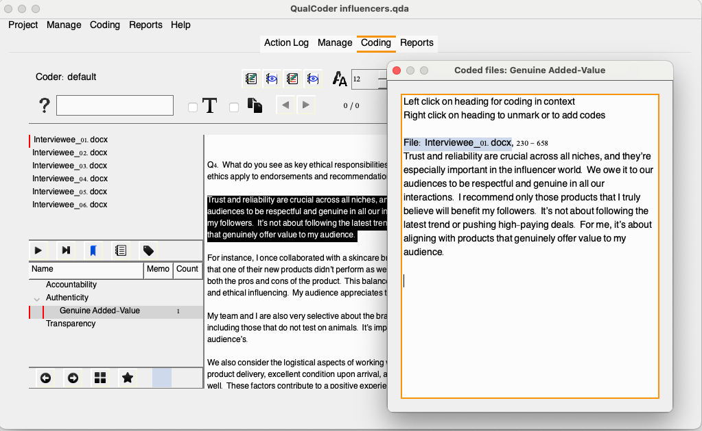
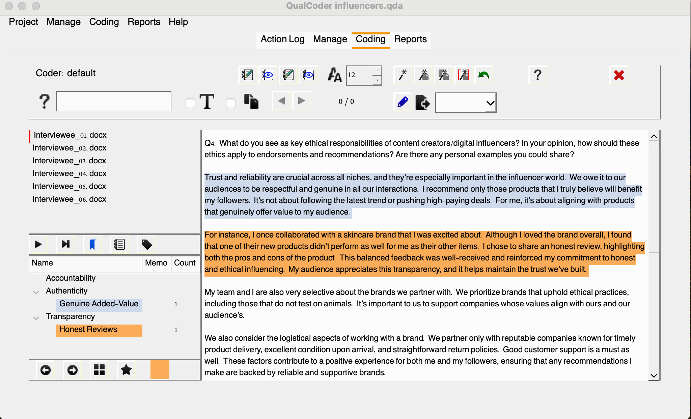
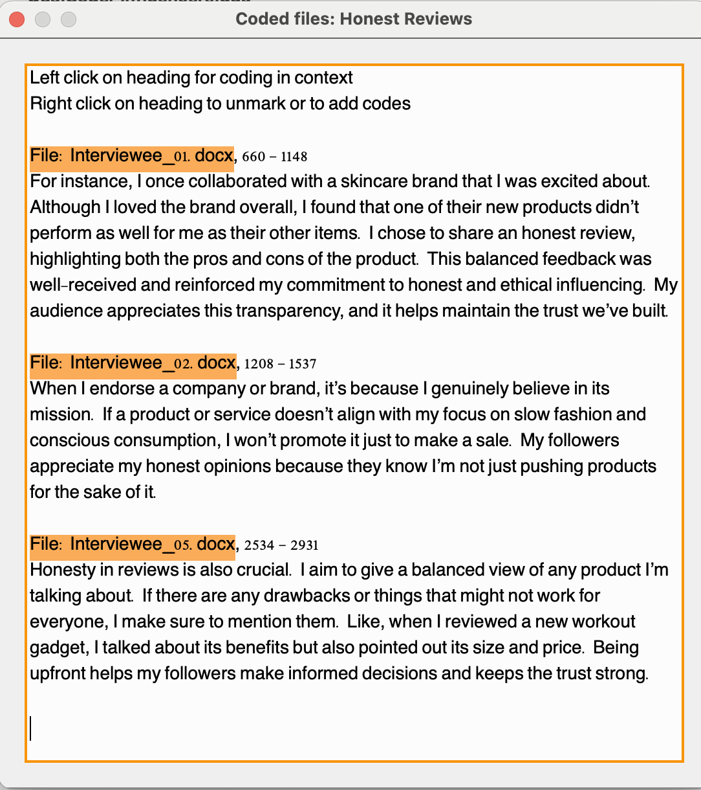
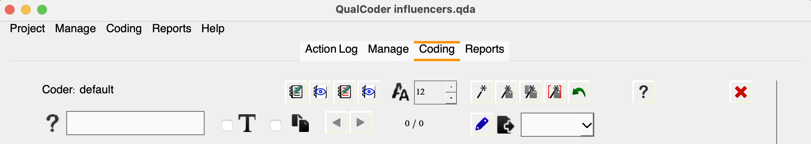
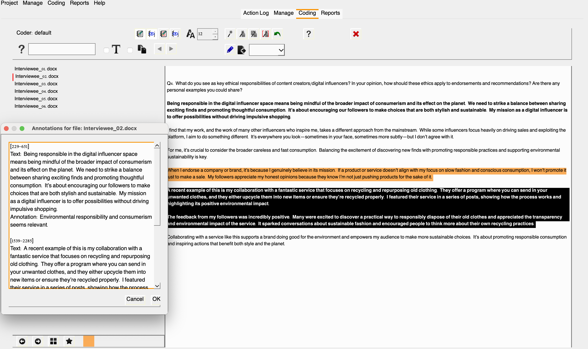
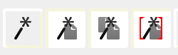
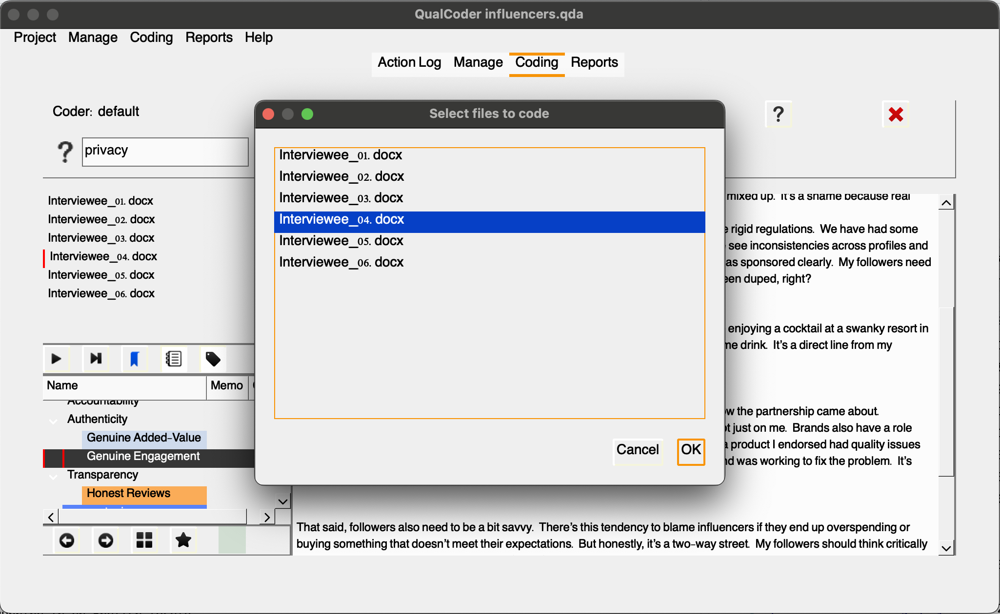
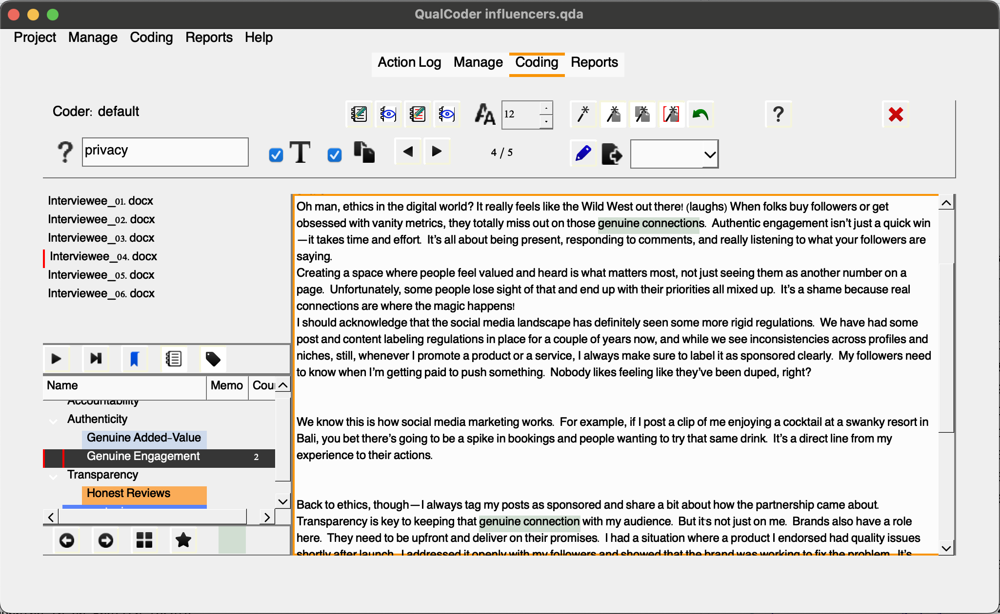
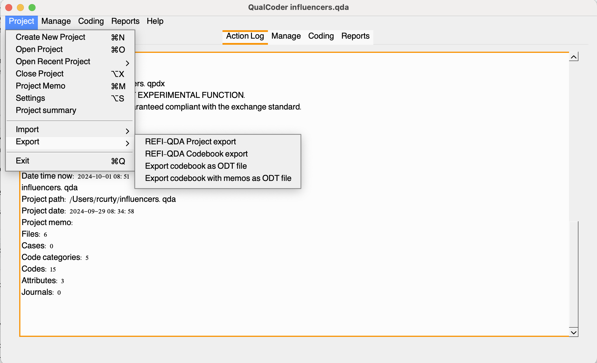

Coding and Documenting with Qualcoder
Practicing with the Case Example
Now that we’re more familiar with QualCoder’s interface and the basics of our project, let’s walk Sarah through the coding analysis of the transcripts using the software’s features and some best practices. QualCoder offers a versatile platform for coding not just text, but also images (including PDFs), video, and audio. While Sarah’s project focuses on textual data, feel free to explore these features for your own work later on!
To make the most of our time, we’ll focus our coding examples and activities on the interviewees’ responses to Question 4:
What do you see as the key ethical responsibilities of content creators and digital influencers? How should these ethics apply to endorsements and recommendations? Can you share any personal examples?
We’ll be using a combination of top-down and bottom-up approaches to demonstrate some important coding features in QualCoder. For now, don’t worry about the various icons on the top bar—we’ll explore those shortly. Instead, let’s concentrate on the lower right-hand window.
Creating Categories & Codes
After we presented the distinction between inductive and deductive coding approaches, Sarah mentioned that her preliminary literature review on the topic revealed some broad topics that could guide her initial coding framework.
She found that accountability, authenticity and transparency are ethical responsibilities frequently associated with the the work of content creators and social media influencers. She’s eager to explore these broad categories while keeping them flexible, allowing for refinement, including branching and or combination of existing codes, and the incorporation of new codes as they emerge. Therefore, we will first create these initial three categories to get her started with some coding using the tool.
It’s important to keep in mind that this process typically requires multiple iterations, which we might not be able to afford in a short episode. While we want to demonstrate the overall process to Sarah, she will likely need to keep adjusting the codes until she comes up with a more solid list of unambiguous ones.
So, we will start by representing these three main categories in QualCoder. To do that, let’s do a ctrl+click on the panel. This will prompt a window with the most important actions for you to engage with the development and organization of your codebook.
Click add a new category, and enter “Accountability”. Complete the same process for the other two: authenticity and transparency. You may also add a memo with some explanation about their meanings.

With QualCoder we can create as many levels we want (as long as they are not ambiguous) and also drag categories and codes to reorganize them. We’ll see more about it later.
We now have three initial categories to work with. Assuming we’re familiar with the transcripts, we’ll explore excerpts related to these categories and consider the possibility of developing new codes. It’s important to remember that while we can’t directly assign categories to excerpts, they serve as a useful guide for exploring the data. This approach will assist us in identifying relevant themes later on, as we’ve seen in previous episodes.
Ok, let’s open the Interviewee_01 transcripts. look at the answer to Q4, let’s read the first paragraph. In these few sentences we can identify a few relevant keywords: trust, reliability, respect, genuine/genuinely. There could be multiple ways to go about it, but let’s say we want to code this section as “Genuine Added-Value” and relate this to the “Authenticity” category.

We can then drag the new code and arrange it under Authenticity. You will notice that a color will be automatically assigned to the code. You may change colors, rename, add memos, move or edit codes using the menu options.
Note that the code now shows that there is one excerpt associated with the code. If you continue assigning more excerpts to a giving code, they will be reflected in that number, but at the file level in this view. You may check all excerpts assigned to a code across files by selecting Show coded files.

Your turn! Code the second paragraph in relation to the category “Transparency” and code it as “Honest Reviews”.

Alright, we have two new codes assigned to this interview, let’s move to other interviews and see if we can find excerpts related to this existing codes. I trust you have found some right away. After assigning honest reviews to another interview excerpt, let’s check the list of coded files.

More Coding Options
Great! Now that we understand how to create categories, assign and organize codes, and view excerpts related to those codes, let’s move our attention now to the top bar we mentioned earlier to understand other coding options we have to assist our coding tasks.

You may use the search box to perform queries using Regex functions and locate specific terms within and across multiple documents. This can be extremely handy to speed up the process of getting to specific passages of the data. Once you perform a search you, unfortunately you won’t see the total of matching results. QualCoder will highlight those and you may use the back and forward arrows to navigate results.
Another useful feature is the ability to create file annotations for selected excerpts and coded sections, all conveniently displayed in one window. This allows you to highlight points that need clarification and passages you may want to revisit, especially if they have the potential to inspire new codes. You can use this tool to streamline your workflow and enhance your analysis. Note that the passage will be highlighted in bold so you can more easily spot what needs your attention. Similar approach can be followed with already coded passages, but typically those memos will reflect decisions behind the coding of that passage.

Alright, here are a few more features to support Sarah’s coding efforts. It’s clear that this approach to coding is much more effective than using post-its or word processors, wouldn’t you agree?
Automatic Coding
QualCoder also offers auto-coding text features represented in the icons below:

You can from left to right:
• auto-code exact text
• auto-code sentences based on a text fragment in the current file
• auto-code sentences based on a text fragment for all files
• auto-code the current file using start and end text marks. You can use ‘\n’ for a line ending character
Note that automatic coding is case-sensitive and requires a defined end for each sentence, with a default setting being a period followed by a space.
To auto-code exact text matches, you can assign multiple text sections using the pipe ‘|’ symbol. For instance, both “politics” and “politicians” can be assigned to the same code simultaneously (only for exact text matches).
Additionally, there is an undo option to revert recent auto-coding actions; however, this option will be lost if the project is closed and then reopened.
The auto-code exact text button includes a right-click menu with additional options. By default, it auto-codes all text, but you can also choose to auto-code only the first instance or specific matching text. When using the auto-code exact text feature, you can select which files to apply it to, making it a useful option if you want to identify a single instance across multiple files.
For example, let’s say Sarah Identified another code under the “Authenticity” category named “Genuine Engagement” to represent content/creators connections with their community of followers. In this case, after we create the code and select it, by choosing the first wand, we can auto-code all mentions of “genuine connection” as “Genuine Engagement”.

We can select as many files we would like to apply the auto-code to the chosen piece of text.

Note that the text is highlighted and coded accordingly.

First, it may lead to a loss of context and limit the scope of analysis, potentially overlooking important themes. Second, the subjective nature of code selection can result in inconsistencies, and complex ideas may become oversimplified. Third, this approach can complicate comparisons across different data sets, since it is unlikely terms and expressions derived from various sources will match.
Auto-coding features, which can be also referred as in vivo, verbatim coding, literal coding use exact phrases or terms from participants’ responses, enabling researchers to highlight key themes and concepts directly from the data. While this method can be effective for preliminary and first cycle coding, researchers should be aware of its potential drawbacks as the primary method. This approach can result in a loss of insight, as context may be overlooked. Additionally, auto-coding often oversimplifies the data, focusing on specific terms rather than capturing broader themes.
Additional features in the Coding Panel
You may also edit text using the blue pencil (proceed with care as this are irreversible) and export your coded files with the list of codes in html, odt or txt. Caution in clicking the red X, that will erase all your coding efforts for that particular file.
Reporting
After reviewing the basics with Sarah, she gained confidence in exploring the data using the tool independently. She initiated a new project over the weekend, concentrating on Q4, where she experimented with the tool and developed categories and codes. When she returned, she had some preliminary coding ready, allowing us to guide her through the reporting features in QualCoder. Although she hasn’t finished the analysis yet, Sarah feels like she is in a good place to navigate the reporting options within the tool with us.
Before we proceed, please download the influencers_q4.qda, save it and open it in QualCoder.
QualCoder offers a few options for users to export, query and visualize the data. It can provide code counting summaries in a variety of formats, word clouds, plotting in bars and pie charts, heat and tree maps. It also supports intercoder reliability testing for datasets coded, independently, by multiple people. Let’s see show Sarah some of the options she might want to consider for her analysis.
[FIXME - add reports screenshots and explanations]
Documenting Things
When conducting qualitative research, it’s crucial to maintain thorough documentation to ensure transparency and ethical compliance. Documentation should include both project and file level documentation. Here’s what we should recommend Sarah to save:
Original Source Data: Retain the original data whenever possible, ensuring it is de-identified to protect participants’ privacy.
Processed Data: de-identified versions of your data, such as transcripts of interviews or focus groups.
Readme File: an overview of your project, including data sources, their relationships and a brief description of the methods.
Data Collection Instruments: A sample of instruments used for data collection, such as surveys or interview guides.
Codebook: the coding framework used, including definitions of codes and categories.
Documentation from Qualitative Data Analysis Software (QDAS): Include all relevant materials generated from QDAS tools (e.g., NVivo, Atlas.ti), such as memos, notes, network diagrams, and classifications.
REFI-QDA CodebookAs seen, a codebook in qualitative or mixed-methods research is a structured list of defined keywords or phrases that represent key themes, concepts, or topics of interest to the researcher. These keywords or phrases are commonly referred to as “codes.”
In qualitative data analysis (QDA) software, codes can be linked to specific segments of data where they appear. While the codebook serves as a comprehensive listing of codes, many QDA programs also allow for the organization of these codes in various ways, depending on the features of the software used.
The REFI-QDA Standard enables interoperability between Qualitative Data Analysis Software (QDAS or CAQDAS) programmes. It ensures that a codebook developed in one of the compatible software programs can be exported and imported into any other listed programs. QualCoder is currently experimenting with this format, and allows .
It’s important to note that because each program has unique functionalities regarding codes and their organization, users may encounter some modifications when importing a codebook into a different software environment.
Check which QDA software are REFI-QDA compatible: https://www.qdasoftware.org/refi-qda-codebook
You may export your project and codebook using the REFI-QDA standard under the Export > Project option.

Attributes are also exportable in csv file, as indicated below: